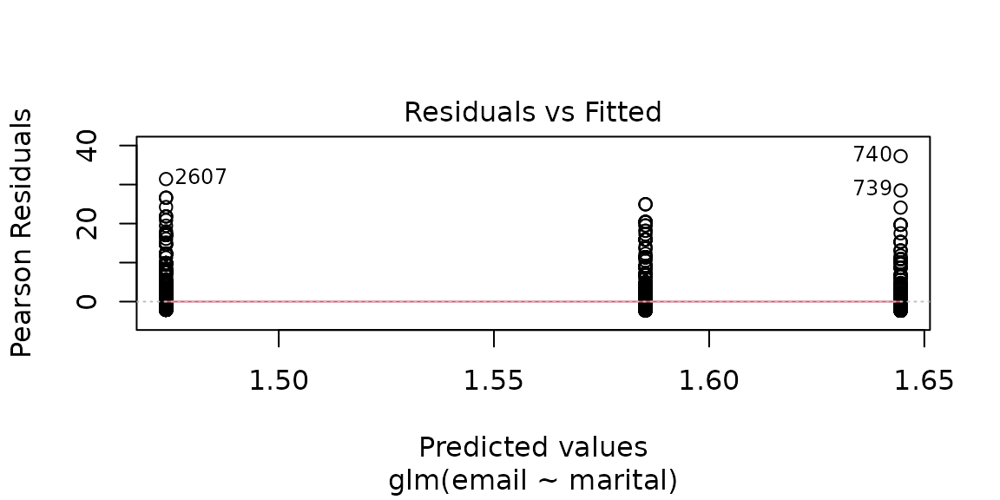

Case Study 14.3: STATS 201/8 Extra Case Study - Poisson GLM. Oneway ANOVA
Source:vignettes/articles/CS14_3.Rmd
CS14_3.RmdQuestion 1
A researcher was interested in comparing e-mail habits of adults, depending on their marital status. They collected a random sample of data from the U.S. General Social Surveys.
The data are stored in email.csv and contain the following variables:
| Variable | Description |
|---|---|
| The number of e-mails a person sent in the last 24 hours (day) recorded at the time of the survey. | |
| marital | The persons current marital status (Married , Divorced or Never). |
Instructions:
- Comment on the plot,table and summary statistics of the data.
- Fit an appropriate GLM to model the number of emails sent. Consider all possible pairwise comparisons of marital status. Generate confidence interval output for this model. See the note below.
- Write appropriate Methods and Assumption Checks.
- Write an appropriate Executive Summary.
Note: ANOVA tests for GLMs:
For regular GLM models, use the command:
anova(fit, test = "Chisq") However, for quasi GLM
models, use the command: anova(fit, test = "F")
Questions of Interest
It was of interest to compare e-mail habits of adults, depending on their marital status.
Read in and inspect the data:
email.df = read.csv("email.csv", stringsAsFactors = TRUE)
with(email.df, table(email))
boxplot(email ~ marital, horizontal = TRUE, data = email.df)
summaryStats(email ~ marital, data = email.df)## email
## 0 1 2 3 4 5 6 7 8 9 10 11 12 13 14 15
## 1194 691 500 262 152 263 78 132 70 5 190 6 31 3 27 75
## 16 18 20 21 22 24 25 27 28 30 32 35 36 38 40 41
## 8 6 98 8 3 8 30 1 5 49 2 9 2 1 25 1
## 42 43 45 48 50 55 60 70 90
## 1 1 4 3 14 1 7 2 1## Sample Size Mean Median Std Dev Midspread
## divorced 740 5.178378 2 9.056316 6
## married 1867 4.365828 2 7.641594 5
## never 1362 4.880323 2 8.418582 5Comment on plot(s) and/or summary statistics
It is difficult to see any difference between the three groups due to the amount of background variation. Most people tend to send 0, 1 or 2 e-mails per day, so all three groups have medians of 2. But all three groups have long upper tails. For the divorced group, the upper tail is slightly longer. The mean is highest in the divorced group and lowest in the married group.
The tables reveal that treating the response as counts is reasonable. The box plots reveal extreme skewness and the variance is considerably larger than the mean, therefore there is very clear evidence of overdispersion relative to the Poisson model. It will not be surprising to find that we need a quasi-Poisson model over an ordinary Poisson regression.
Fit an appropriate GLM:
##
## Call:
## glm(formula = email ~ marital, family = poisson, data = email.df)
##
## Coefficients:
## Estimate Std. Error z value Pr(>|z|)
## (Intercept) 1.64449 0.01615 101.799 < 2e-16 ***
## maritalmarried -0.17068 0.01959 -8.714 < 2e-16 ***
## maritalnever -0.05928 0.02028 -2.923 0.00347 **
## ---
## Signif. codes: 0 '***' 0.001 '**' 0.01 '*' 0.05 '.' 0.1 ' ' 1
##
## (Dispersion parameter for poisson family taken to be 1)
##
## Null deviance: 35726 on 3968 degrees of freedom
## Residual deviance: 35637 on 3966 degrees of freedom
## AIC: 44528
##
## Number of Fisher Scoring iterations: 6
plot(email.fit1, which = 1)
1 - pchisq(deviance(email.fit1), df = df.residual(email.fit1))## [1] 0
# Overdispersion is extremely strong
# Quasi-Poisson fit
email.fit2 = glm(email ~ marital, family = quasipoisson, data = email.df)
summary(email.fit2)##
## Call:
## glm(formula = email ~ marital, family = quasipoisson, data = email.df)
##
## Coefficients:
## Estimate Std. Error t value Pr(>|t|)
## (Intercept) 1.64449 0.06093 26.988 <2e-16 ***
## maritalmarried -0.17068 0.07388 -2.310 0.0209 *
## maritalnever -0.05928 0.07651 -0.775 0.4385
## ---
## Signif. codes: 0 '***' 0.001 '**' 0.01 '*' 0.05 '.' 0.1 ' ' 1
##
## (Dispersion parameter for quasipoisson family taken to be 14.22776)
##
## Null deviance: 35726 on 3968 degrees of freedom
## Residual deviance: 35637 on 3966 degrees of freedom
## AIC: NA
##
## Number of Fisher Scoring iterations: 6
anova(email.fit2, test = "F")## Analysis of Deviance Table
##
## Model: quasipoisson, link: log
##
## Response: email
##
## Terms added sequentially (first to last)
##
##
## Df Deviance Resid. Df Resid. Dev F Pr(>F)
## NULL 3968 35726
## marital 2 89.59 3966 35637 3.1484 0.04303 *
## ---
## Signif. codes: 0 '***' 0.001 '**' 0.01 '*' 0.05 '.' 0.1 ' ' 1
confint(email.fit2)## Waiting for profiling to be done...## 2.5 % 97.5 %
## (Intercept) 1.5226360 1.76158526
## maritalmarried -0.3142923 -0.02455156
## maritalnever -0.2082954 0.09175207## Waiting for profiling to be done...## 2.5 % 97.5 %
## 0.7303055 0.9757474## Waiting for profiling to be done...## 2.5 % 97.5 %
## -26.969450 -2.425262
# Rotate factor
email.df <- within(email.df, {
maritalR <- factor(marital, levels = c("never", "married", "divorced"))
})
email.fit3 = glm(email ~ maritalR, family = quasipoisson, data = email.df)
summary(email.fit3)##
## Call:
## glm(formula = email ~ maritalR, family = quasipoisson, data = email.df)
##
## Coefficients:
## Estimate Std. Error t value Pr(>|t|)
## (Intercept) 1.58521 0.04627 34.264 <2e-16 ***
## maritalRmarried -0.11140 0.06234 -1.787 0.074 .
## maritalRdivorced 0.05928 0.07651 0.775 0.438
## ---
## Signif. codes: 0 '***' 0.001 '**' 0.01 '*' 0.05 '.' 0.1 ' ' 1
##
## (Dispersion parameter for quasipoisson family taken to be 14.22776)
##
## Null deviance: 35726 on 3968 degrees of freedom
## Residual deviance: 35637 on 3966 degrees of freedom
## AIC: NA
##
## Number of Fisher Scoring iterations: 6## Waiting for profiling to be done...Method and Assumption Checks
A Poisson log-linear model was fitted to the counts of number of emails. The explanatory variables was marital status, a factor variable with 3 levels.
Residuals looked fine. The Residual deviance is much bigger than the residual deviance degrees of freedom, so it is no surprise that the P-value for the model adequacy test was small and comes out as 0. Therefore we have strong evidence that the data is over-dispersed so the model was refitted as quasipoisson.
The final model is approximately where is the mean number of e-mail sent by person , is 1 if person is married and 0 otherwise, similarly for . has has an overdispersed distribution with underlying mean .
Note 1: this is not a Poisson distribution in this case as we used a QuasiPoisson model.)
Note 2: could use for as have the same definition.
Executive Summary
We were interested in comparing the number of e-mails sent per day between people who were married, divorced or never married.
We found that there was evidence that married people send fewer e-mails than divorced people. There was weak evidence that married people also send fewer e-mails than people who have never been married.
We estimate that the expected number of e-mails that married people send is somewhere between 2.4% and 27.0% lower than that sent by people who have been divorced.